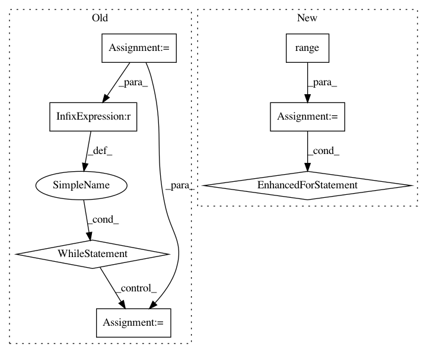

7371fd412b05b167f19e70257916b077636a2acb,wordclasses/optimizer.py,Optimizer,_find_best_move,#Optimizer#,157
Before Change
best_class_id = None
old_class_id = self.word_to_class[word_id]
class_id = self.first_normal_class_id
while class_id < self.num_classes:
if class_id == old_class_id:
continue
ll_diff = self._evaluate_move(word_id, class_id)
if ll_diff > best_ll_diff:
best_ll_diff = ll_diff
best_class_id = class_id
class_id += 1
assert not best_class_id is None
return best_ll_diff, best_class_id
def _evaluate_move(self, word_id, new_class_id):
After Change
best_class_id = None
old_class_id = self.word_to_class[word_id]
for class_id in range(self.first_normal_class_id, self.num_classes):
if class_id == old_class_id:
continue
ll_diff = self._evaluate_move(word_id, class_id)
if ll_diff > best_ll_diff:
best_ll_diff = ll_diff
best_class_id = class_id
assert not best_class_id is None
return best_ll_diff, best_class_id
def _evaluate_move(self, word_id, new_class_id):
In pattern: SUPERPATTERN
Frequency: 3
Non-data size: 7
Instances
Project Name: senarvi/theanolm
Commit Name: 7371fd412b05b167f19e70257916b077636a2acb
Time: 2016-03-10
Author: seppo.git@marjaniemi.com
File Name: wordclasses/optimizer.py
Class Name: Optimizer
Method Name: _find_best_move
Project Name: pyprob/pyprob
Commit Name: 22b907cc151f4ae9ec9ff95e2438836ef5660b60
Time: 2020-08-06
Author: atilimgunes.baydin@gmail.com
File Name: pyprob/model.py
Class Name: Model
Method Name: posterior
Project Name: tyiannak/pyAudioAnalysis
Commit Name: 597ae33645d1a8a0e2e87e8bec05232594d5c447
Time: 2020-06-13
Author: tyiannak@gmail.com
File Name: pyAudioAnalysis/ShortTermFeatures.py
Class Name:
Method Name: chromagram